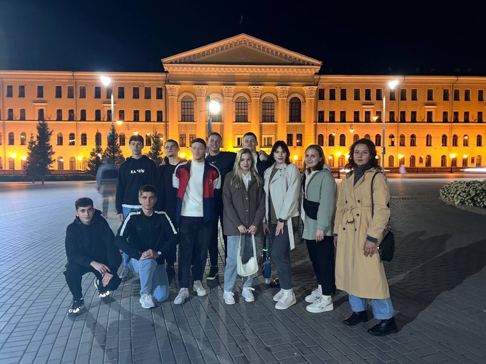

Роль старосты группы
Как староста группы, я научился многому, что важно для организации учебного процесса. Важно не только координировать взаимодействие между преподавателями и студентами, но и развивать лидерские качества, которые необходимы в любых ситуациях. Для меня группа - это вторая семья, я отвечаю за каждого студента и этим горжусь!
Активный образ жизни
Активный образ жизни - это не просто спортивные тренировки и прогулки на свежем воздухе, путешествия и занятия спортом. Важно находить баланс между умственной и физической нагрузкой. Ведь регулярные физические нагрузки помогают не только поддерживать здоровье, но и повышают общую продуктивность. Я считаю, что активный образ жизни - это залог долгосрочного успеха в жизни.